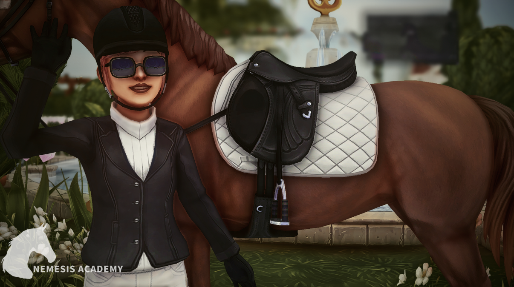
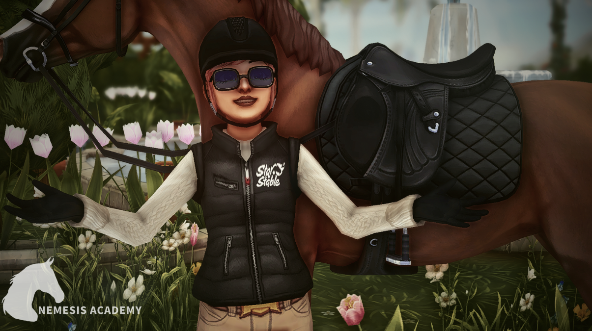
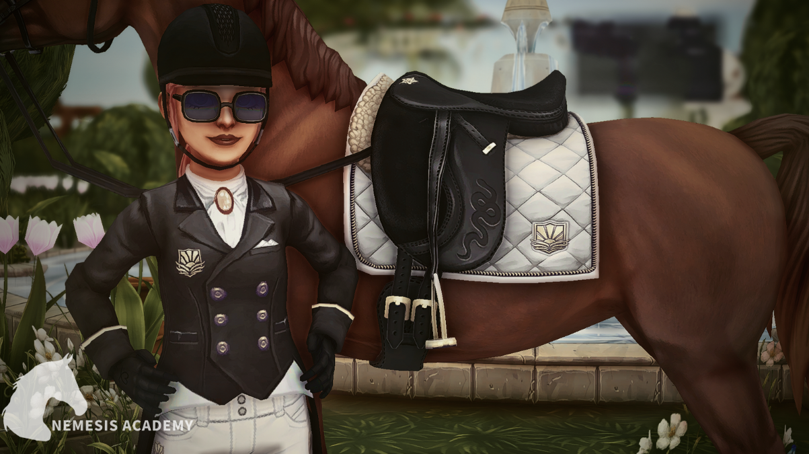
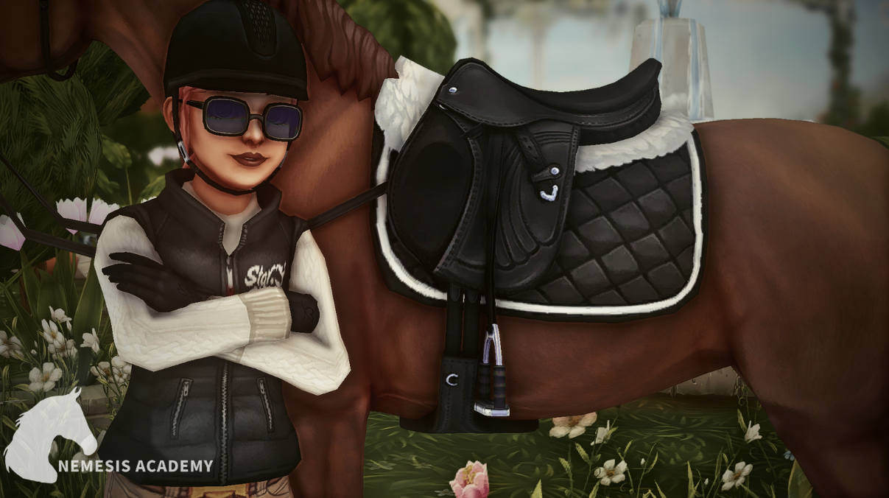
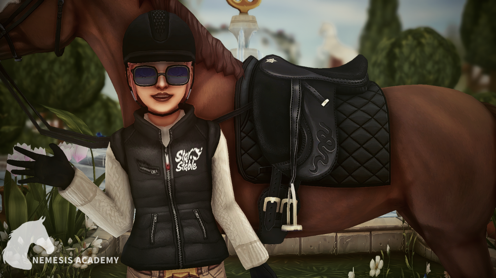

Strój skokowy
Strój na zawody:
Marynarka Rywalizacja (9900 JS 110 SC)
Biały czaprak do skoków przez przeszkody JVN (10000 JS 100 SC)

Stój codzienny:
Czarny czaprak EkoAthleisure ~ (4800 JS, 80 SC)
LUB
~ Czarny czaprak do skoków przez przeszkody JVN (10000 JS, 100 SC)
Team Star Stable kamizelka jeździecka ~ (8100 JS, 102 SC)

Strój Ujeżdżeniowy
Strój na zawody:
Czarna kurtka do ujeżdżenia JVN (9000 JS, 110 SC)
Biały czaprak do ujeżdżenia JVN (9500 JS, 95 SC)

Stój codzienny:
Czarny czaprak EkoAthleisure ~ (4800 JS, 80 SC)
LUB
~ Czarny czaprak do skoków przez przeszkody JVN (10000 JS, 100 SC)
Team Star Stable kamizelka jeździecka ~ (8100 JS, 102 SC)

Team Star Stable kamizelka jeździecka ~ (8100 JS, 102 SC)
Czarny koc do ujeżdżania ~ (10 000 JS, 100 SC)
